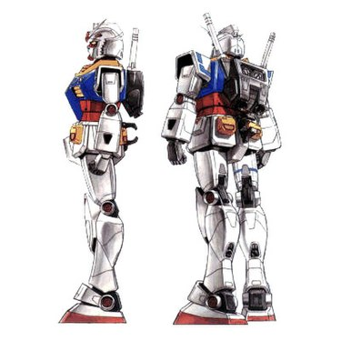

Float
Hình ảnh sẽ ở bên trái và văn bản sẽ bám theo nó:

Gundam (ガンダム Gandamu?) là dòng sản phẩm truyền thông khoa học viễn
tưởng được sản xuất bởi Sunrise, dòng sản phẩm này xoay quanh những
người máy khổng lồ (mecha) với tên gọi "Gundam". Dòng sản phẩm này
được khởi đầu vào ngày 7 tháng 4 năm 1979 với bộ phim Mobile Suit
Gundam, bộ phim cùng với các sản phẩm phụ đã tạo ra một dòng sản phẩm
bao gồm phim truyền hình, OVAs, phim điện ảnh, truyện tranh, tiểu
thuyết và trò chơi điện tử. Cùng với đó là cả một ngành công nghiệp Mô
hình người máy, được biết đến với cái tên Gunpla. Gunpla chiếm 90% thị
trường mô hình nhân vật
Hình ảnh sẽ ở bên phải và văn bản sẽ bám theo nó:
.jpg)
Gunpla (tiếng Nhật: ガンプラ, đọc là găn-pla) là từ viết tắt của
"Gandamu no Puramoderu", nghĩa là "mô hình nhựa Gundam" (Gundam
Plastic Model). Từ này được dùng để chỉ loại đồ chơi mô hình lập thể
bằng nhựa có đề tài là các loại Robot được gọi là Mobile Suit và
Mobile Armour và các loại chiến hạm xuất hiện trong series Anime
Gundam mà đại biểu là tác phẩm "Kidō Senshi Gandamu" (chiến sĩ cơ động
Gundam). Tuy nhiên, danh từ Gunpla thường được dùng để chỉ mô hình
Gundam được lắp ráp từ các mảnh nhựa đúc sẵn hơn là chỉ bản thân mô
hình Gundam. Vì vậy, ngoài các loại mô hình được hình thành từ việc
người dùng lắp ráp từ các mảnh nhựa, còn có dòng mô hình HCM Pro được
nhà sản xuất lắp ráp sẵn và nó được xem như một kiểu Gunpla đã hoàn
thiện sẵn. Bộ mô hình nhựa được gọi là Model kit, bao gồm nhiều mảnh
nhựa rời được gọi là part (bộ phận), khi lắp ráp các part lại với nhau
sẽ được mô hình hoàn chỉnh. Các mảnh nhựa rời này được gắn trên khung
nhựa gọi là runner. Mỗi một hộp sản phẩm Gunpla bao gồm nhiều runner
và các phụ kiện liên quan, một tập sách nhỏ (booklet) giới thiệu sơ
lược về mẫu Gundam trong hộp và hướng dẫn cách lắp ráp.
Clear
Dùng clear để ngăn phần văn bản chiếm không gian của hình ảnh đã áp dụng float bên trái:
Gundam (ガンダム Gandamu?) là dòng sản phẩm truyền thông khoa học
viễn tưởng được sản xuất bởi Sunrise, dòng sản phẩm này xoay quanh
những người máy khổng lồ (mecha) với tên gọi "Gundam". Dòng sản phẩm
này được khởi đầu vào ngày 7 tháng 4 năm 1979 với bộ phim Mobile
Suit Gundam, bộ phim cùng với các sản phẩm phụ đã tạo ra một dòng
sản phẩm bao gồm phim truyền hình, OVAs, phim điện ảnh, truyện
tranh, tiểu thuyết và trò chơi điện tử. Cùng với đó là cả một ngành
công nghiệp Mô hình người máy, được biết đến với cái tên Gunpla.
Gunpla chiếm 90% thị trường mô hình nhân vật
Dùng clear để ngăn phần văn bản chiếm không gian của hình ảnh đã áp dụng float bên phải:
Gunpla (tiếng Nhật: ガンプラ, đọc là găn-pla) là từ viết tắt của
"Gandamu no Puramoderu", nghĩa là "mô hình nhựa Gundam" (Gundam
Plastic Model). Từ này được dùng để chỉ loại đồ chơi mô hình lập thể
bằng nhựa có đề tài là các loại Robot được gọi là Mobile Suit và
Mobile Armour và các loại chiến hạm xuất hiện trong series Anime
Gundam mà đại biểu là tác phẩm "Kidō Senshi Gandamu" (chiến sĩ cơ
động Gundam). Tuy nhiên, danh từ Gunpla thường được dùng để chỉ mô
hình Gundam được lắp ráp từ các mảnh nhựa đúc sẵn hơn là chỉ bản
thân mô hình Gundam. Vì vậy, ngoài các loại mô hình được hình thành
từ việc người dùng lắp ráp từ các mảnh nhựa, còn có dòng mô hình HCM
Pro được nhà sản xuất lắp ráp sẵn và nó được xem như một kiểu Gunpla
đã hoàn thiện sẵn. Bộ mô hình nhựa được gọi là Model kit, bao gồm
nhiều mảnh nhựa rời được gọi là part (bộ phận), khi lắp ráp các part
lại với nhau sẽ được mô hình hoàn chỉnh. Các mảnh nhựa rời này được
gắn trên khung nhựa gọi là runner. Mỗi một hộp sản phẩm Gunpla bao
gồm nhiều runner và các phụ kiện liên quan, một tập sách nhỏ
(booklet) giới thiệu sơ lược về mẫu Gundam trong hộp và hướng dẫn
cách lắp ráp.